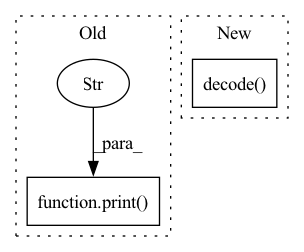

Pattern ID :34707
Before Change
src_ids = X[:, 0, 0].squeeze().tolist() // (1, 2, 2, L) -> (1, L) -> (L) -> list
pred_ids = transformer.predict(X).squeeze().tolist() // (1, L) -> (L) -> list
print([tokenizer.id_to_token(src_id) for src_id in src_ids])
print("->" )
print([tokenizer.id_to_token(pred_id) for pred_id in pred_ids])
if __name__ == "__main__":After Change
src_ids = X[0, 0, 0].tolist() // (1, 2, 2, L) -> (L) -> list
pred_ids = transformer.predict(X).squeeze().tolist() // (1, L) -> (L) -> list
pred_ids = pred_ids[: pred_ids.index(tokenizer.eos_token_id)] // noqa
print(tokenizer.decode(ids=src_ids), "->", tokenizer.decode(ids=pred_ids) )
if __name__ == "__main__":In pattern: SUPERPATTERN
Frequency: 4
Non-data size: 2
Instances Fragment ID: 99586142
Project Name: eubinecto/the-clean-transformer
Commit Name: fec218b75568e8fe876d9015cb2cd186661303ef
Time: 2021-12-11
Author: eubinecto
File Name: main_infer.py
M Class Name: AnonimousClass
N Class Name: AnonimousClass
M Method Name: main(0)
N Method Name: main(0)
M Parent Class:
N Parent Class:
M File Name: main_infer.py
N File Name: main_infer.py
M Start Line: 13
M End Line: 26
N Start Line: 17
N End Line: 24
Before Change
x = x.to(pl_module.device)
with torch.no_grad():
pl_module.eval()
print("fuck" )
//generate sample with image provided
x_rec = pl_module.generate_images(text=text, img = x, filter_thres=0.9) // topk sampling at 0.9
print("fuck")
//generate sample without imageAfter Change
text, x = batch
sample_text = text[:1]
token_list = sample_text.masked_select(sample_text != 0).tolist()
decoded_text = self.tokenizer.decode( token_list)
text = text.to(pl_module.device)
x = x.to(pl_module.device)
with torch.no_grad(): Fragment ID: 99586139
Project Name: tgisaturday/dalle-lightning
Commit Name: d5154f7e185c7b737a7bb3b9f1f9048d811cab37
Time: 2021-07-26
Author: jamesk1228@gmail.com
File Name: pl_dalle/callbacks.py
M Class Name: DalleImageSampler
N Class Name: DalleImageSampler
M Method Name: on_train_batch_end(7)
N Method Name: on_train_batch_end(7)
M Parent Class: Callback
N Parent Class: Callback
M File Name: pl_dalle/callbacks.py
N File Name: pl_dalle/callbacks.py
M Start Line: 206
M End Line: 209
N Start Line: 202
N End Line: 246
Before Change
prediction_output.append(output)
// printing for debugging
print("Answers------->\n" )
print(prediction_output)
// Getting ROUGE scores
for ex, mo in zip(inputs, prediction_output):
score = self._scorer.score(After Change
// creating output Dict
output = {
"generated_text" : self.tokenizer.decode(predict_answer_tokens),
"generated_text2" : self.tokenizer.decode( predict_answer_tokens) ,
// adding answer_text for debugging
"answers_text": answers_text[i]
// "tokens": self.tokenizer.convert_ids_to_tokens(tokenized_text.input_ids[i]), Fragment ID: 99586137
Project Name: pair-code/lit
Commit Name: 3f2ae88736736f16941b88e0cce30382d7d9a24f
Time: 2022-06-28
Author: 31214277+aryan1107@users.noreply.github.com
File Name: lit_nlp/examples/models/tydi.py
M Class Name: TyDiModel
N Class Name: TyDiModel
M Method Name: predict_minibatch(2)
N Method Name: predict_minibatch(2)
M Parent Class: lit_model.Model
N Parent Class: lit_model.Model
M File Name: lit_nlp/examples/models/tydi.py
N File Name: lit_nlp/examples/models/tydi.py
M Start Line: 71
M End Line: 106
N Start Line: 72
N End Line: 99